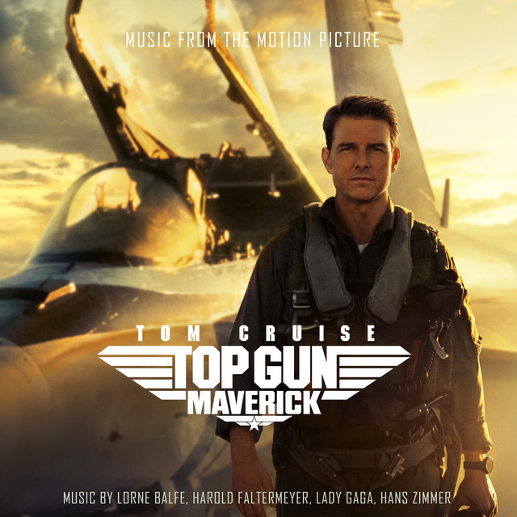
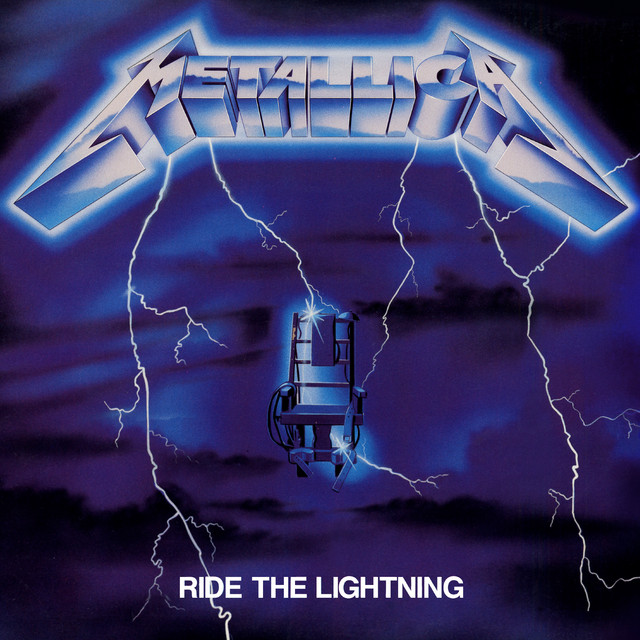
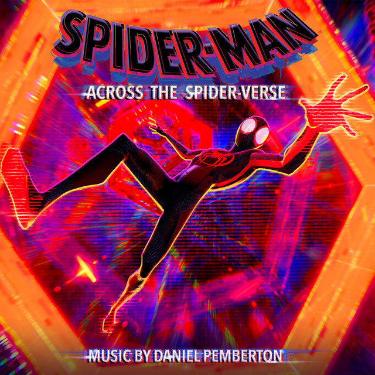

This page is for the records I couldn't divide into sections but still would like to talk about due to either how they look or just about the album itself. This will be a mix of different types of music but not the entirety of the collection.

While I do have interest in aircraft, I wouldn't say I'm a huge fan of the Top Gun movies. I can say, however, it is shot wonderfully and the music is to match. I was surprised with just how many scenes I could visualise from just listening to the soundtrack. The record is plain white, I think it fits well with the album.

Ride the Lightning is another album I've been listening to for the past couple of years, especially "For Whom The Bell Tolls". I've listened to this specific piece several times and still haven't grown tired of it. The record is plain black.

I got this record a few years after seeing the movie, which I thought was well made. I remembered the music was good and I was already getting the Top Gun vinyl, so I thought to take two soundtracks. There are two records inside, white and black with splatters, which mirror the appearance of the main villain in act I and act II.